Texto Explicativo da Aula
Introdução às Portas de Comunicação
As CPUs da família Siemens S7 são equipadas com portas de comunicação que permitem integrar o CLP a outros equipamentos e sistemas presentes na planta industrial. Essa capacidade de comunicação é fundamental na automação moderna, pois raramente um CLP opera de forma completamente isolada. Na grande maioria das aplicações, ele precisa trocar dados com computadores de programação, interfaces homem-máquina (IHMs), outros CLPs, módulos de I/O distribuídos, inversores de frequência, sistemas supervisórios (SCADA) e outros dispositivos inteligentes.
Dependendo do modelo e da série da CPU, podem estar presentes até quatro tipos diferentes de portas de comunicação: MPI, DP (Profibus), PTP e PN (Profinet). Cada uma dessas portas corresponde a um protocolo de comunicação específico e é utilizada em contextos e aplicações distintos. O conhecimento sobre essas portas é essencial para o correto planejamento da arquitetura de comunicação de um sistema automatizado.
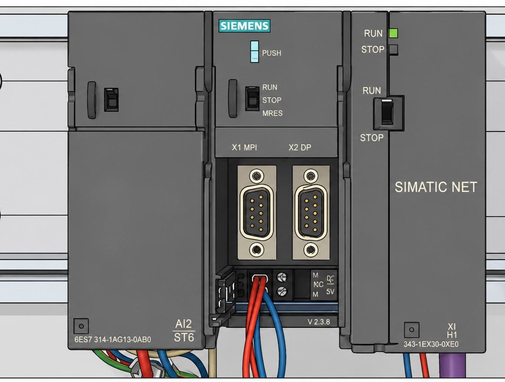
Porta MPI (Multipoint Interface)
A porta MPI (Multipoint Interface, ou Interface Multiponto) é a mais fundamental das portas de comunicação presentes nas CPUs S7, estando disponível em todos os modelos das séries S7-300 e S7-400. Sua presença universal nas CPUs dessa família faz dela a interface mais básica e indispensável para o trabalho com CLPs Siemens.
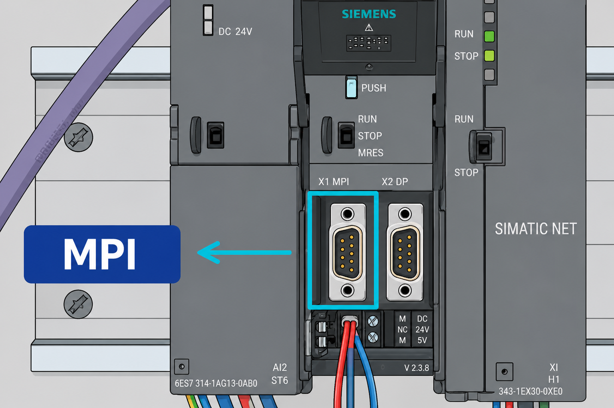
Aplicação 1: Download e Upload de Programas
O uso mais imediato e frequente da porta MPI é a conexão entre o computador de programação e a CPU para transferência de programas. Para realizar essa conexão, utiliza-se um dispositivo chamado PC Adapter, que funciona como um conversor de interface bidirecional:
- Em uma extremidade, o PC Adapter possui um conector USB, que se conecta ao computador (notebook ou desktop com o software STEP 7 ou TIA Portal instalado).
- Na outra extremidade, possui um conector compatível com a porta MPI da CPU.
Por meio dessa conexão, é possível realizar o download (transferência do programa do computador para a CPU) e o upload (leitura do programa existente na CPU para o computador), além de monitorar variáveis em tempo real, realizar diagnósticos e alterar parâmetros de configuração.
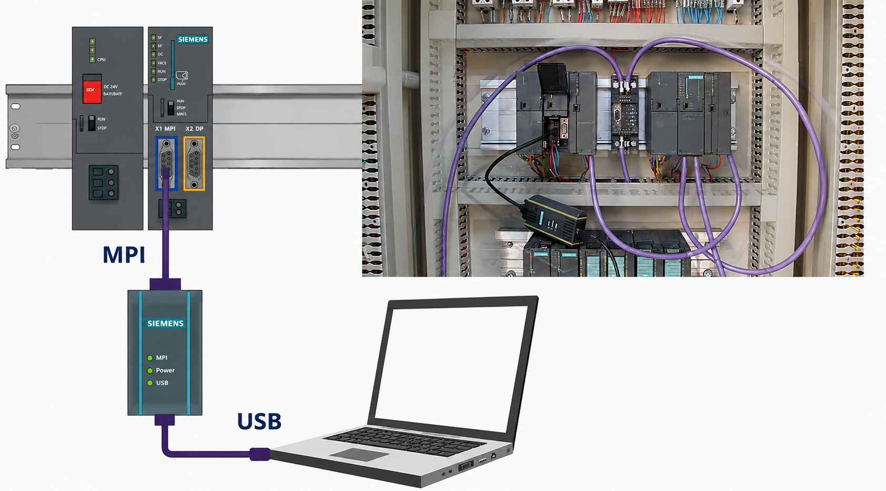
Aplicação 2: Rede MPI
A porta MPI também pode ser utilizada para criar uma rede MPI, conectando a CPU a outros equipamentos de automação, como IHMs (Interfaces Homem-Máquina), outros CLPs S7 ou estações de programação. Por meio dessa rede, dados do processo controlado pelo CLP podem ser transmitidos à IHM instalada no painel de operação, onde operadores e técnicos podem visualizar em tempo real informações como temperatura, pressão, nível e outros parâmetros do processo.
Um aspecto técnico importante da rede MPI é que ela utiliza o cabo RS-485 como meio físico de transmissão. Esse tipo de cabo é amplamente conhecido por seu uso em redes Profibus DP, mas não é exclusivo dessa rede. O RS-485 também é o meio físico padrão para a rede MPI, permitindo comunicação confiável em ambientes industriais com distâncias de até algumas centenas de metros.
A rede MPI suporta a conexão de múltiplos dispositivos (configuração multiponto), com velocidades de comunicação de até 12 Mbit/s, sendo adequada para aplicações onde não é necessária a alta velocidade ou o grande volume de dados característicos do Profibus DP ou Profinet.
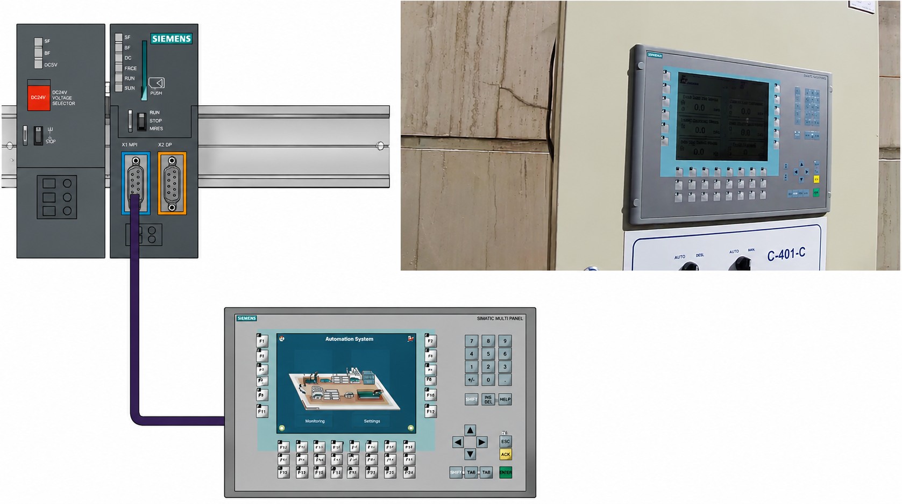
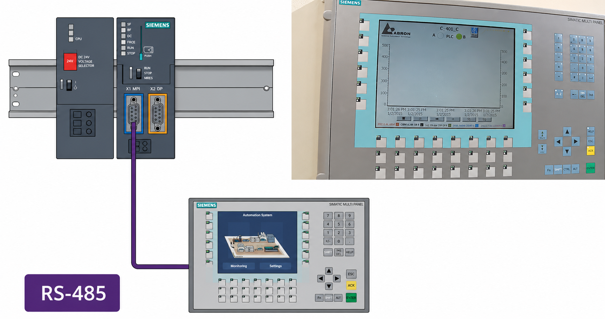
Porta DP (Profibus DP)
A porta DP está presente em determinados modelos de CPU S7, geralmente identificados pela designação "2 DP" ou similar no nome do modelo, como CPU 315-2 DP. Sua presença indica que a CPU é capaz de operar como mestre ou escravo em uma rede Profibus DP (Decentralized Peripherals, ou Periféricos Descentralizados).
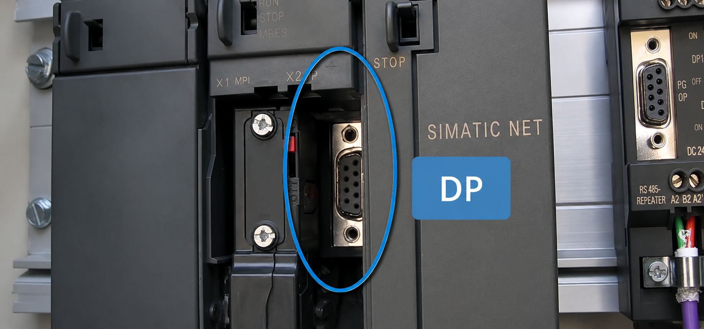
O que é o Profibus DP?
O Profibus DP é um dos protocolos de comunicação industrial mais utilizados no mundo, especialmente em aplicações com a plataforma Siemens. Trata-se de uma rede de campo (fieldbus) que permite conectar a CPU a uma ampla variedade de dispositivos de automação, como:
- Módulos de I/O distribuídos (estações remotas de I/O).
- Inversores de frequência e servo-acionamentos.
- Outros CLPs operando como escravos.
- Sensores e atuadores inteligentes com interface Profibus.
Assim como a rede MPI, o Profibus DP utiliza cabo RS-485 como meio físico, mas opera com características diferentes: taxas de comunicação de até 12 Mbit/s e topologia em barramento, com terminação em ambas as extremidades do cabo.
Aplicação Prática
Um exemplo típico de uso da porta DP é a conexão de uma CPU instalada no rack principal a um módulo de interface (IM) instalado em um rack de expansão remoto. Nessa configuração, a CPU atua como mestre da rede Profibus DP e o módulo de interface do rack remoto atua como escravo, permitindo que sinais de I/O fisicamente distantes da CPU sejam gerenciados de forma eficiente por meio do cabo Profibus.
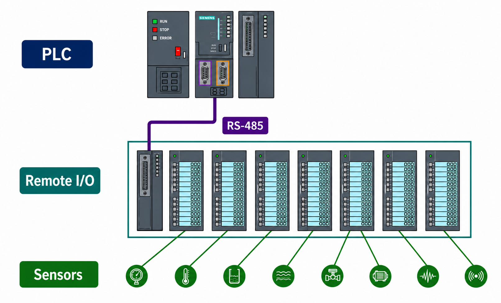
Porta PTP (Point-to-Point)
A porta PTP (Point-to-Point, ou Ponto a Ponto) está disponível em alguns modelos de CPU S7 e é utilizada para comunicação serial direta entre o CLP e dispositivos que utilizam o protocolo Modbus ou outros protocolos seriais ponto a ponto.
Diferentemente das redes MPI e Profibus, que são redes multiponto e podem conectar vários dispositivos simultaneamente, a porta PTP estabelece uma comunicação direta entre dois dispositivos, como:
- Impressoras industriais: para impressão direta de etiquetas, relatórios de produção ou registros de processo.
- Leitores de código de barras: para identificação de produtos, rastreabilidade e controle de estoque integrado ao processo.
- Balanças e instrumentos de medição: equipamentos com interface serial que precisam enviar dados diretamente ao CLP.
- Dispositivos legados: equipamentos mais antigos que utilizam protocolos seriais como RS-232 ou RS-485 com Modbus RTU.
A porta PTP é especialmente útil em situações onde a simplicidade da comunicação direta é suficiente e não há necessidade de uma rede multiponto mais complexa.
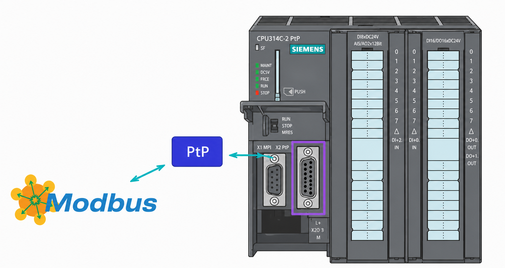
Porta PN (Profinet / Ethernet Industrial)
A porta PN (Profinet) representa a mais moderna das interfaces de comunicação disponíveis nas CPUs S7, baseada no padrão Ethernet Industrial (conector RJ-45, cabo UTP ou STP). A presença dessa porta na CPU indica compatibilidade com a rede Profinet, o protocolo industrial desenvolvido pela Siemens e pelo consórcio Profibus Internacional como sucessor natural do Profibus DP, aproveitando a infraestrutura e os padrões consolidados das redes Ethernet.
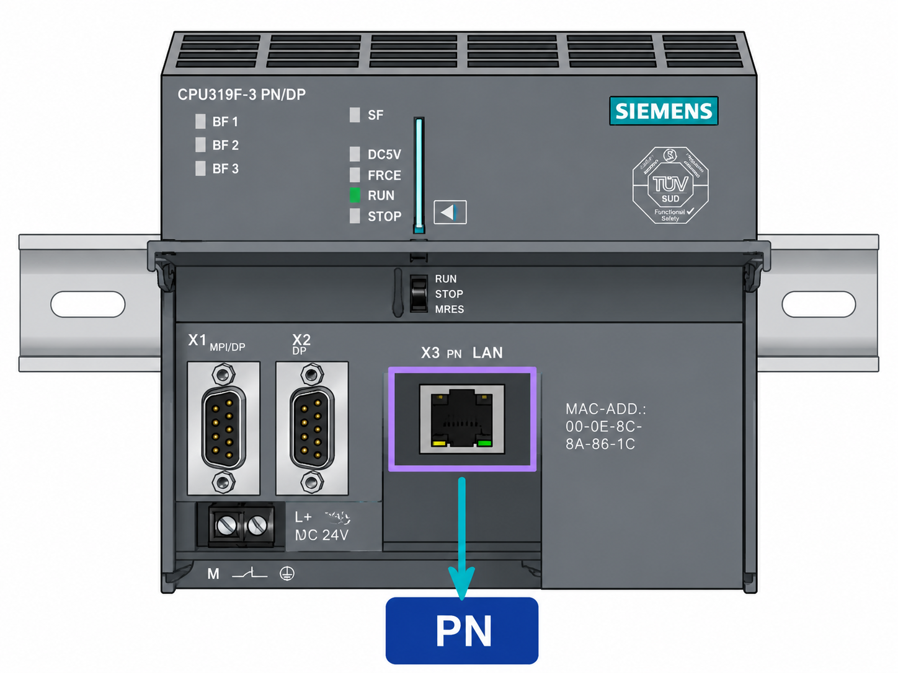
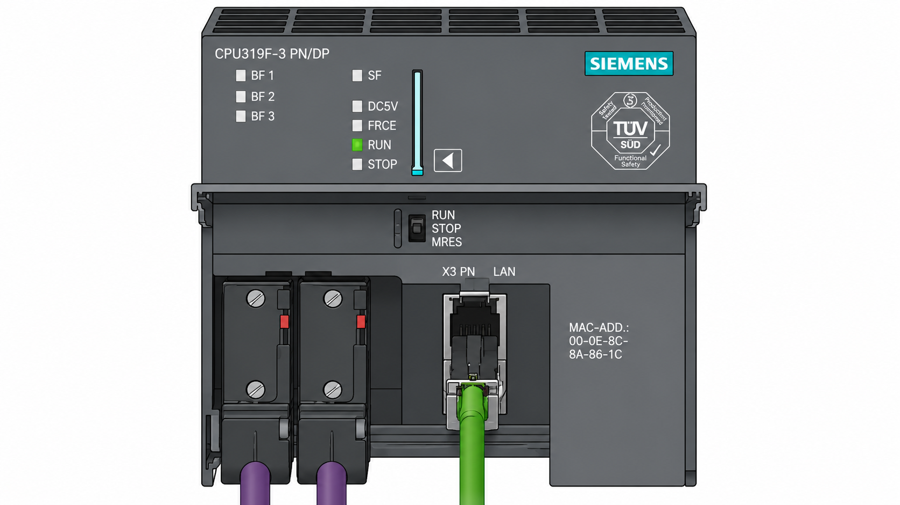
Características e Vantagens do Profinet
- Alta velocidade: opera a 100 Mbit/s (Fast Ethernet) ou 1 Gbit/s (Gigabit Ethernet) em alguns modelos, muito superior ao Profibus DP.
- Infraestrutura padronizada: utiliza cabos, switches e conectores Ethernet padrão, amplamente disponíveis e com custo reduzido.
- Integração com redes corporativas: facilita a integração entre o nível de chão de fábrica e os sistemas de gestão empresarial (ERP, MES), pois utiliza a mesma base de protocolo TCP/IP.
- Topologia flexível: suporta topologias em estrela, linha e anel, adaptando-se a diferentes layouts de plantas industriais.
Versatilidade da Porta Profinet
A porta Profinet é uma das interfaces mais versáteis e presentes no ecossistema de automação moderno. Ela não é exclusiva dos CLPs. IHMs, inversores de frequência, câmeras de visão industrial, robôs e até computadores e notebooks convencionais possuem porta Ethernet compatível com o Profinet. Isso significa que a mesma porta pode ser utilizada para:
- Programação: conectar o notebook com STEP 7 ou TIA Portal diretamente ao CLP via cabo Ethernet, sem necessidade de PC Adapter.
- Comunicação com IHM: transferir dados entre a CPU e painéis de operação via rede Profinet.
- Integração de dispositivos de campo: conectar módulos de I/O distribuídos, inversores e outros dispositivos Profinet.
- Acesso remoto: integração com redes corporativas para monitoramento e diagnóstico remoto.
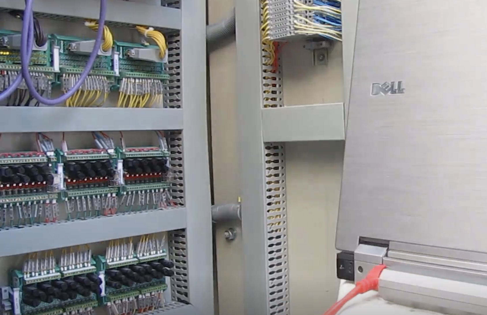
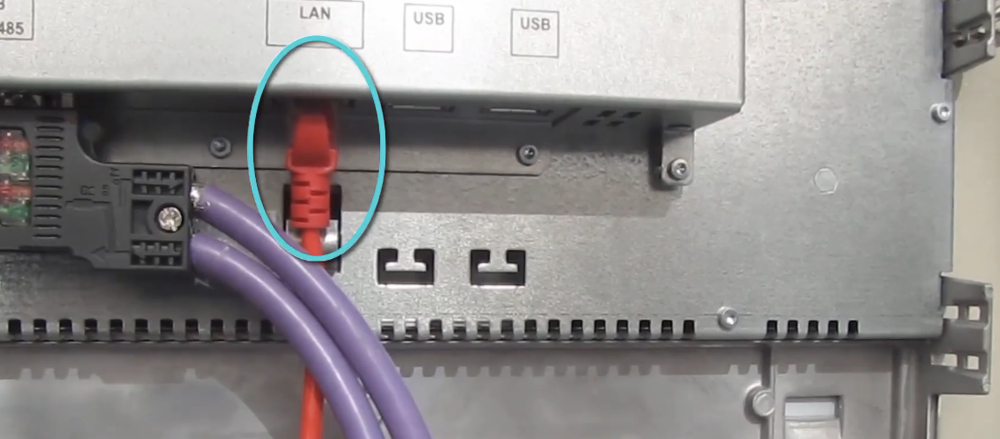
Resumo das Portas de Comunicação da CPU S7
Exemplo Prático Aplicado
Cenário: Arquitetura de Comunicação de uma Planta de Tratamento de Efluentes
Uma indústria química implanta um sistema de tratamento de efluentes com múltiplos equipamentos e necessidade de monitoramento centralizado. A arquitetura de comunicação é projetada utilizando as diferentes portas da CPU S7-300, modelo CPU 315-2 PN/DP.
Passo 1: Definição dos equipamentos e necessidades de comunicação
O engenheiro de automação levanta os seguintes requisitos:
- Programação e manutenção via notebook com TIA Portal.
- IHM no painel principal para monitoramento do operador.
- Rack de I/O remoto para sinais na área de tanques, distante 80 metros.
- Leitor de código de barras para identificação de lotes de produto químico.
- Integração futura com sistema MES da fábrica.
Passo 2: Seleção e atribuição das portas
Com base nos requisitos, o engenheiro define:
- Porta PN (Profinet): utilizada para a conexão do notebook de programação e da IHM no painel, aproveitando a infraestrutura Ethernet já existente na planta. Também será a interface para integração futura com o MES.
- Porta DP (Profibus DP): utilizada para conectar a CPU ao módulo de interface (IM 153) instalado no rack remoto de I/O na área dos tanques, via cabo Profibus RS-485.
- Porta MPI: reservada como interface de backup para programação de emergência via PC Adapter, caso a rede Profinet não esteja disponível.
- Porta PTP: utilizada para conectar o leitor de código de barras diretamente à CPU via comunicação serial Modbus.
Passo 3: Instalação física das conexões
O técnico realiza as conexões físicas:
- Cabo UTP Cat5e entre o switch Ethernet do painel e a porta PN da CPU.
- O mesmo switch conecta o notebook e a IHM Siemens KTP700, que também possui porta Profinet.
- Cabo Profibus (RS-485, par trançado blindado, cor violeta) entre a porta DP da CPU e o rack remoto, com conectores de barramento e terminação ativa nas extremidades.
- Cabo serial RS-232 entre a porta PTP da CPU e o leitor de código de barras.
Passo 4: Configuração no TIA Portal
O engenheiro configura no TIA Portal:
- Endereço IP da CPU na rede Profinet, por exemplo 192.168.0.1.
- Endereço IP da IHM na mesma rede, por exemplo 192.168.0.2.
- Configuração da rede Profibus DP: CPU como mestre, IM 153 como escravo no endereço 3.
- Configuração da comunicação PTP para Modbus RTU com o leitor de código de barras.
Passo 5: Validação do sistema
Após a configuração e download do programa via Profinet, o engenheiro valida:
- A IHM exibe corretamente as variáveis de nível, pH e vazão dos tanques.
- Os sinais de I/O do rack remoto são lidos e controlados corretamente pela CPU via Profibus DP.
- O leitor de código de barras transmite os dados do lote ao CLP via porta PTP, que os registra no programa.
- O acesso via notebook permanece disponível tanto pela rede Profinet quanto pela porta MPI com PC Adapter (backup).
Conclusão: a utilização planejada das diferentes portas de comunicação da CPU S7 permite construir uma arquitetura de automação integrada, flexível e confiável, atendendo a todas as necessidades de comunicação do sistema com o protocolo mais adequado para cada aplicação.
Questões de Múltipla Escolha
-
Qual porta de comunicação está presente em todos os modelos de CPU das séries S7-300 e S7-400, independentemente do modelo específico?
A) Porta DP (Profibus)
B) Porta PN (Profinet)
C) Porta MPI
D) Porta PTP (Modbus)
-
Para conectar um notebook com software de programação à porta MPI de uma CPU S7, qual dispositivo intermediário é necessário?
A) Switch Ethernet industrial com suporte a Profinet
B) Módulo de interface (IM) para rack de expansão
C) PC Adapter, que converte a interface USB do computador para o conector MPI da CPU
D) Cabo Profibus com conector DB9 em ambas as extremidades
-
Um técnico precisa criar uma rede para conectar a CPU S7 a uma IHM instalada no painel de controle, transmitindo dados de temperatura e pressão do processo. Qual porta e protocolo são mais adequados para essa aplicação?
A) Porta PTP com protocolo Modbus RTU
B) Porta MPI com rede MPI, utilizando cabo RS-485
C) Porta DP com protocolo Profibus DP em modo escravo
D) Não é possível conectar uma IHM diretamente à CPU S7
-
Qual afirmação sobre o cabo RS-485 está correta no contexto das redes industriais do CLP S7?
A) O cabo RS-485 é utilizado exclusivamente na rede Profibus DP, não sendo compatível com outras redes
B) O cabo RS-485 pode ser utilizado tanto na rede MPI quanto na rede Profibus DP
C) O cabo RS-485 é o meio físico padrão da rede Profinet e não pode ser usado com Profibus
D) O cabo RS-485 é utilizado apenas na porta PTP para comunicação Modbus com impressoras
-
A porta DP presente em algumas CPUs S7 é utilizada para qual tipo de rede industrial?
A) Rede Profinet para comunicação com IHMs via Ethernet
B) Rede MPI para programação via PC Adapter
C) Rede Profibus DP para conexão com I/O distribuído, inversores e outros dispositivos de campo
D) Rede Modbus para comunicação ponto a ponto com leitores de código de barras
-
Qual é a principal característica que diferencia a porta PTP das demais portas de comunicação da CPU S7?
A) É a porta de maior velocidade de comunicação, utilizada em redes Profinet de alta performance
B) Estabelece comunicação direta ponto a ponto com um único dispositivo, sendo usada com protocolos como Modbus e para conexão com periféricos como impressoras e leitores de código de barras
C) É a única porta que permite download de programas sem necessidade de PC Adapter
D) Cria redes multiponto com até 127 dispositivos conectados simultaneamente via cabo RS-485
-
Um engenheiro projeta um sistema onde a CPU S7 precisa controlar módulos de I/O instalados em um rack remoto, localizado a 100 metros de distância. Qual porta e protocolo são mais indicados para essa aplicação?
A) Porta MPI com PC Adapter e cabo USB
B) Porta PTP com protocolo Modbus TCP via cabo Ethernet
C) Porta DP com rede Profibus DP e cabo RS-485
D) Porta PN com rede Profinet e cabo UTP, mas apenas se a distância for inferior a 50 metros
-
Qual das afirmações abaixo descreve corretamente a porta Profinet (PN) presente em algumas CPUs S7?
A) Utiliza cabo RS-485 e opera exclusivamente com o protocolo Modbus TCP
B) É baseada no padrão Ethernet industrial, opera com conector RJ-45 e permite programação, comunicação com IHMs e integração com redes corporativas
C) Está disponível em todos os modelos de CPU S7-300 e S7-400, substituindo completamente a porta MPI
D) Opera a uma velocidade máxima de 1,5 Mbit/s, inferior ao Profibus DP, sendo indicada apenas para redes de pequeno porte
-
Um operador relata que precisa transferir um programa do notebook para uma CPU S7 que possui apenas porta MPI disponível, mas o PC Adapter está danificado. Qual alternativa é tecnicamente viável se a CPU também possuir porta Profinet?
A) Conectar o notebook diretamente à porta MPI usando um cabo USB comum, sem necessidade de adaptador
B) Utilizar a porta Profinet da CPU e conectar o notebook via cabo Ethernet, realizando o download pelo TIA Portal sem necessidade do PC Adapter
C) Realizar o download via porta PTP utilizando um cabo serial RS-232 e o software STEP 7
D) Não é possível realizar o download sem o PC Adapter; o sistema fica inoperante até a substituição do adaptador
-
Considerando as quatro portas de comunicação da CPU S7, qual combinação de porta e aplicação está incorretamente associada?
A) Porta MPI: conexão com IHM via rede MPI usando cabo RS-485
B) Porta DP: conexão com rack de I/O remoto via rede Profibus DP
C) Porta PTP: conexão com leitor de código de barras via protocolo Modbus serial
D) Porta PN: conexão com módulos de I/O distribuídos via rede Profibus DP
Gabarito
1 - C | 2 - C | 3 - B | 4 - B | 5 - C | 6 - B | 7 - C | 8 - B | 9 - B | 10 - D